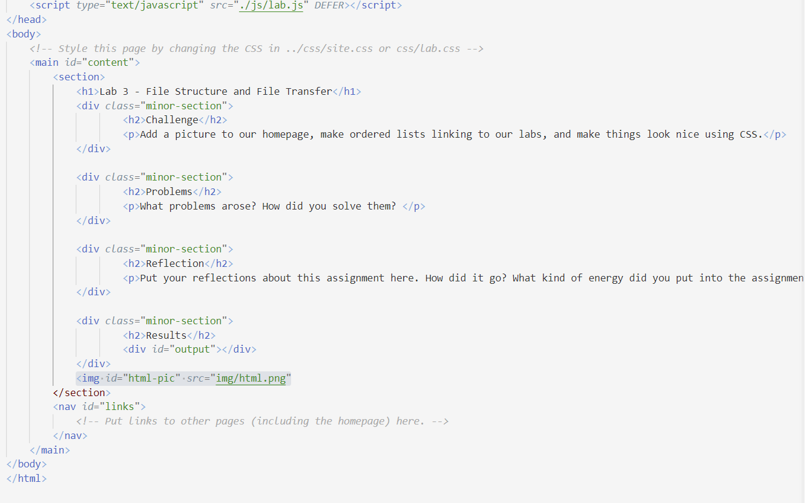
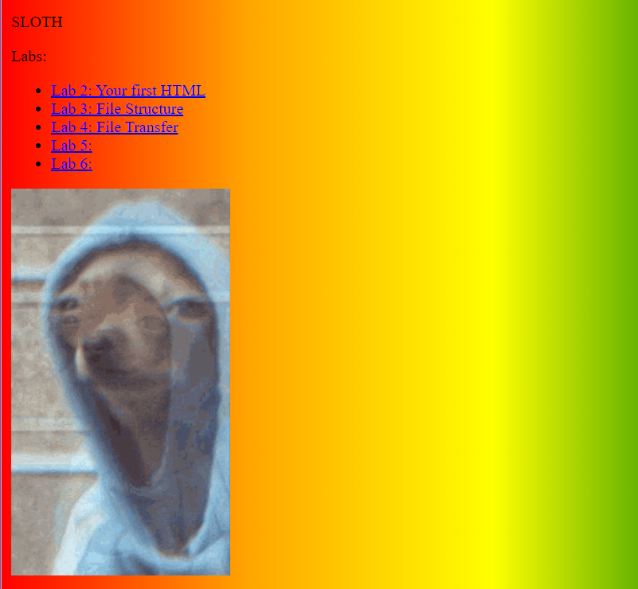

Lab 3 - File Structure and File
Challenge
We added a picture to our homepage, made ordered lists linking to our labs, and made things look nice using CSS as well as took screenshots and addedd them to our lab site with captions.
Problems
I encountered a problem where my main homepage background and my lab background were the same and I wanted my lab backgound to be different so I put in code that would override the stylesheet for my main homepage and took off the background (#content { background-image: none; }).
Reflection
The assignment went well over all even though there were some bumps in the process. I also encoutered an error where I thought my site was glitching but I had just made a mistake and I figured it out. This happened a couple times but I was always able to eventually solve it. I had a fun time customizing my site with css and working with my partner.
Results
See results in photo section
lab links
html lab3
picture of homepage with lab links
picture of photo on homepage